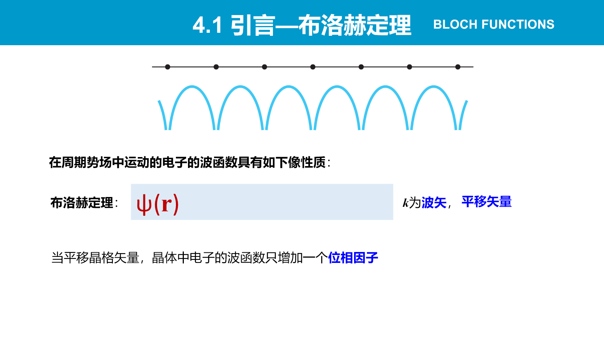
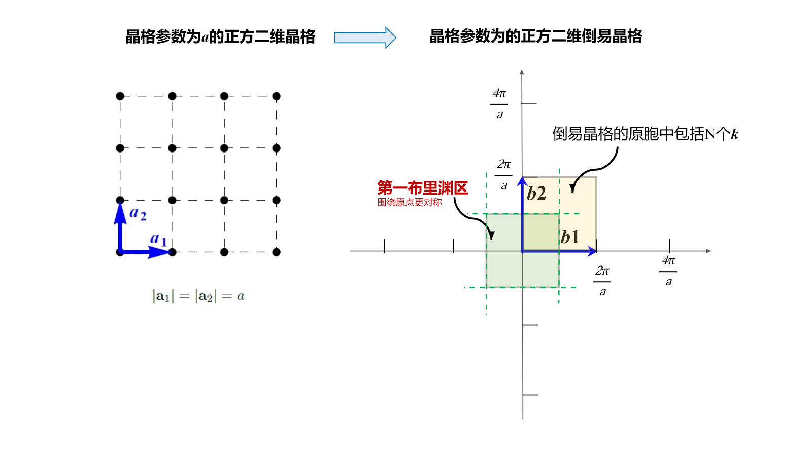
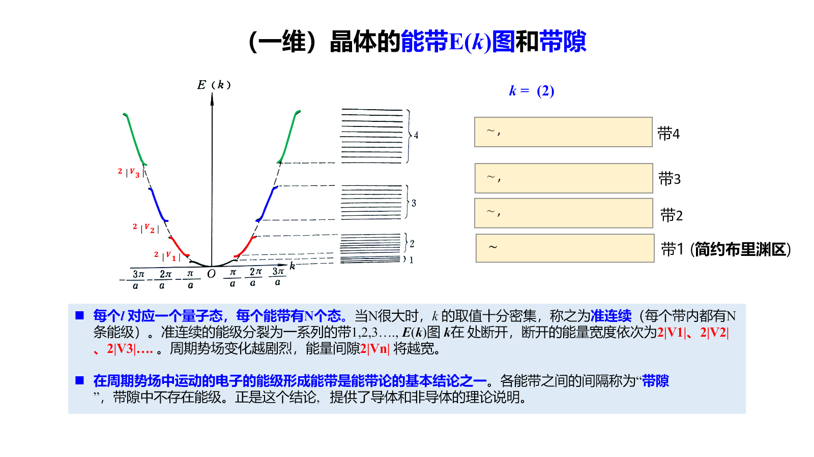
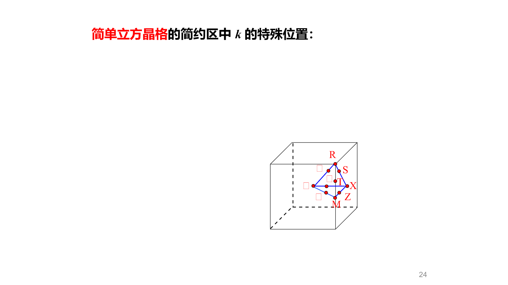
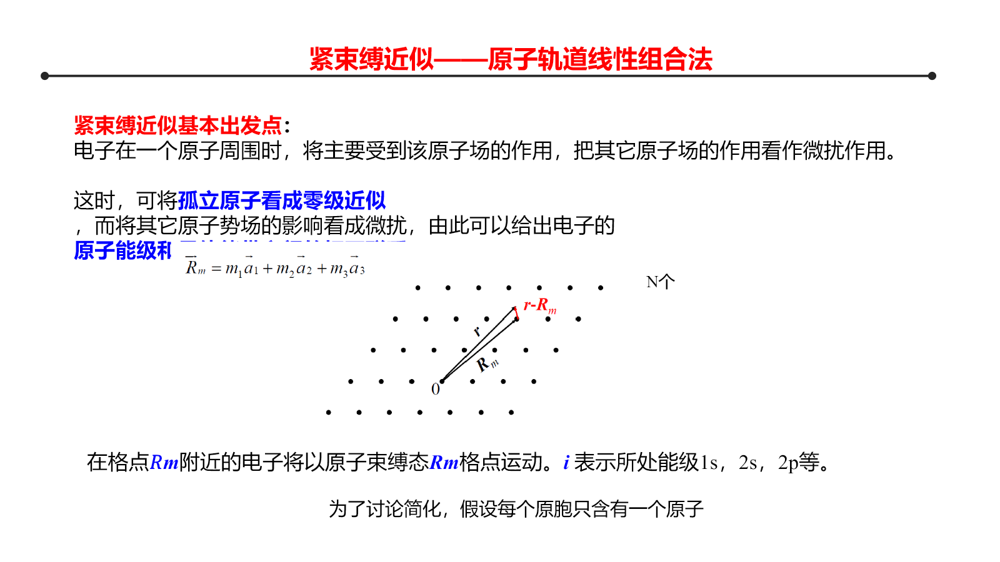
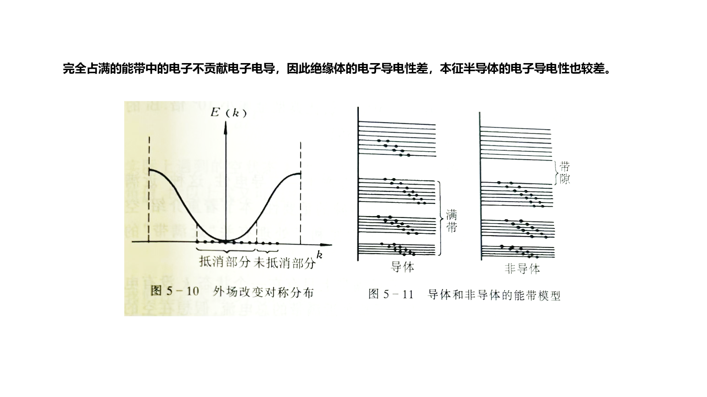
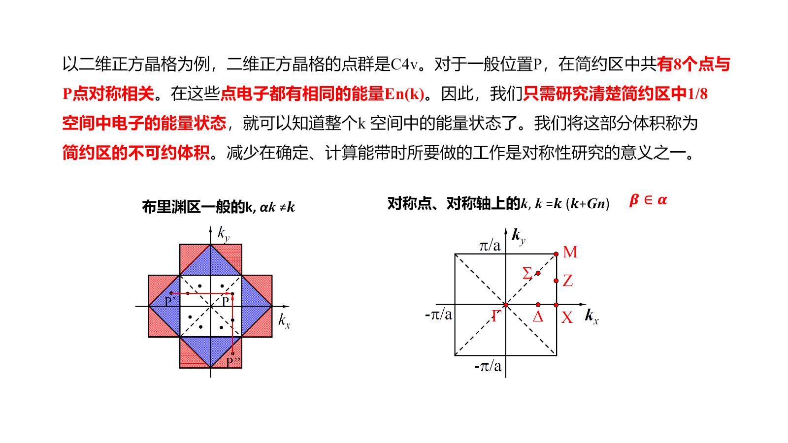
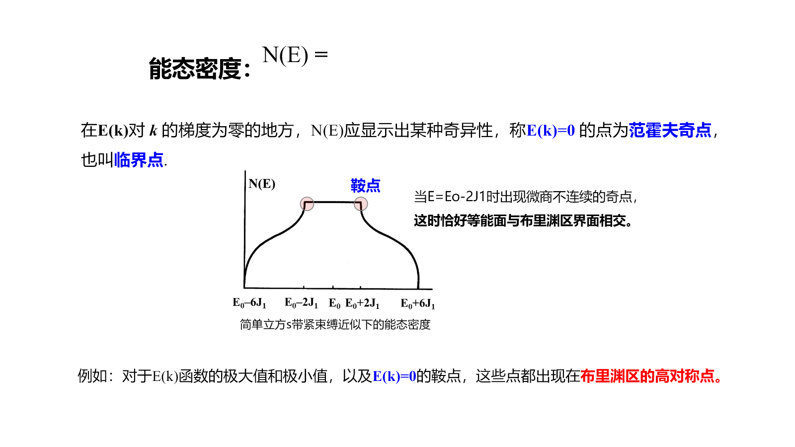
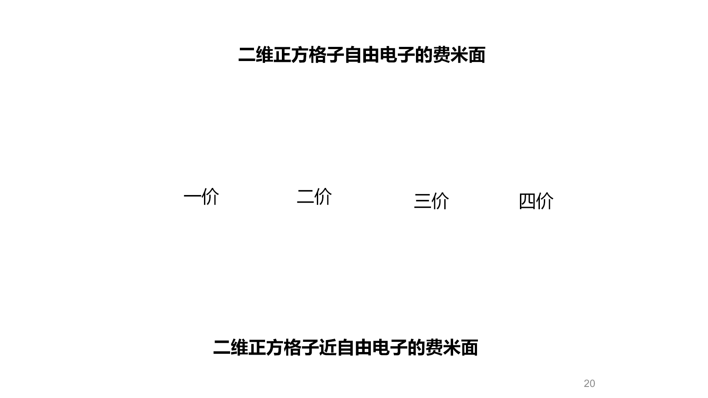

Chapter 3：固体能带理论基础
约 2143 个字 9 张图片 预计阅读时间 11 分钟
本章从晶体的平移周期性出发，建立布洛赫态 → Brillouin 区 → 能带与带隙 → 能态密度与费米面的逻辑链。近自由电子近似适合从自由电子出发理解弱周期势，紧束缚近似适合从孤立原子轨道出发理解强局域电子；二者描述的是同一能带问题的两个极限。
3.1 周期势场与布洛赫定理
3.1.1 单电子近似
在 Born–Oppenheimer 近似下先固定离子实，把每个电子视为在离子实周期势、其他电子平均势和交换作用共同形成的等效势场中独立运动：
\[
\hat H=-\frac{\hbar^2}{2m}\nabla^2+V(\mathbf r)
\]
理想晶体满足
\[
V(\mathbf r+\mathbf R)=V(\mathbf r)
\]
其中 \(\mathbf R\) 是任意晶格矢量。
3.1.2 布洛赫定理的推导
周期性使平移算符与哈密顿算符对易：
\[
[\hat H,\hat T_{\mathbf R}]=0
\]
故可取共同本征态
\[
\hat T_{\mathbf R}\psi(\mathbf r)
=\psi(\mathbf r+\mathbf R)
=\lambda(\mathbf R)\psi(\mathbf r)
\]
平移群满足
\[
\hat T_{\mathbf R_1}\hat T_{\mathbf R_2}
=\hat T_{\mathbf R_1+\mathbf R_2}
\]
所以本征值必须满足
\[
\lambda(\mathbf R_1+\mathbf R_2)
=\lambda(\mathbf R_1)\lambda(\mathbf R_2)
\]
又因为平移保持归一化，\(|\lambda|=1\)，可写成
\[
\lambda(\mathbf R)=e^{i\mathbf k\cdot\mathbf R}
\]
于是得到布洛赫条件
\[
\psi_{n\mathbf k}(\mathbf r+\mathbf R)
=e^{i\mathbf k\cdot\mathbf R}\psi_{n\mathbf k}(\mathbf r)
\]
令
\[
u_{n\mathbf k}(\mathbf r)=e^{-i\mathbf k\cdot\mathbf r}\psi_{n\mathbf k}(\mathbf r)
\]
可验证 \(u_{n\mathbf k}(\mathbf r+\mathbf R)=u_{n\mathbf k}(\mathbf r)\)，因此
\[
\boxed{\psi_{n\mathbf k}(\mathbf r)
=e^{i\mathbf k\cdot\mathbf r}u_{n\mathbf k}(\mathbf r)}
\]
布洛赫波不是完全自由的平面波，而是被晶格周期函数调制的平面波。量子数 \(n\) 标记能带，\(\mathbf k\) 标记同一能带中的不同平移本征态。

3.2 波矢、周期性边界条件与 Brillouin 区
设晶体沿三个基矢方向分别含 \(N_1,N_2,N_3\) 个原胞，并采用 Born–von Kármán 周期边界条件：
\[
\psi(\mathbf r+N_i\mathbf a_i)=\psi(\mathbf r)
\]
结合布洛赫条件，得到
\[
e^{iN_i\mathbf k\cdot\mathbf a_i}=1
\]
故允许波矢为
\[
\mathbf k=\frac{m_1}{N_1}\mathbf b_1+\frac{m_2}{N_2}\mathbf b_2+\frac{m_3}{N_3}\mathbf b_3
\]
第一 Brillouin 区内共有
\[
N=N_1N_2N_3
\]
个离散 \(\mathbf k\) 点。宏观晶体中 \(N\) 极大，\(\mathbf k\) 点可视为准连续。由于
\[
E_n(\mathbf k+\mathbf G)=E_n(\mathbf k)
\]
相差倒易格矢的波矢等价，只需研究第一 Brillouin 区。

3.3 近自由电子近似
3.3.1 非简并区域
把周期势写成 Fourier 级数
\[
V(\mathbf r)=\sum_{\mathbf G}V_{\mathbf G}e^{i\mathbf G\cdot\mathbf r}
\]
零级近似为自由电子
\[
E_{\mathbf k}^{0}=\frac{\hbar^2k^2}{2m},qquad
\psi_{\mathbf k}^{0}=\frac1{\sqrt V}e^{i\mathbf k\cdot\mathbf r}
\]
周期势只耦合相差一个倒易格矢的平面波，因为
\[
\langle\mathbf k'|V|\mathbf k\rangle
=V_{\mathbf G},qquad \mathbf k'-\mathbf k=\mathbf G
\]
远离简并点时，周期势只对自由电子抛物线产生小修正。
3.3.2 Brillouin 区边界与带隙
在区边界附近，\(|\mathbf k\rangle\) 与 \(|\mathbf k-\mathbf G\rangle\) 能量相近，必须作简并微扰。两态近似的矩阵为
\[
\begin{pmatrix}
E_{\mathbf k}^{0} & V_{\mathbf G}\\
V_{\mathbf G}^{*} & E_{\mathbf k-\mathbf G}^{0}
\end{pmatrix}
\begin{pmatrix}c_1\\c_2\end{pmatrix}
=E\begin{pmatrix}c_1\\c_2\end{pmatrix}
\]
本征能量为
\[
E_{\pm}=\frac{E_{\mathbf k}^{0}+E_{\mathbf k-\mathbf G}^{0}}2
\pm\sqrt{\left(\frac{E_{\mathbf k}^{0}-E_{\mathbf k-\mathbf G}^{0}}2\right)^2+|V_{\mathbf G}|^2}
\]
区边界处两自由电子能量相等，故
\[
\boxed{E_g=E_+-E_-=2|V_{\mathbf G}|}
\]
周期势使原本相交的自由电子能级发生避免交叉并打开禁带。其物理图像是：满足 Bragg 条件的电子波形成两个驻波，一个在离子实附近概率密度大，另一个在离子实之间概率密度大；二者势能不同，简并被解除。

3.3.3 三维能带
三维中每个 Brillouin 区对应一支能带。通常沿高对称路径绘制 \(E_n(\mathbf k)\)，例如立方晶格中的 \(\Gamma\)、\(X\)、\(L\) 等点。能带图只是高对称线上的截面，不代表完整三维色散。

3.4 紧束缚近似
3.4.1 Bloch 轨道线性组合
当电子主要局域在原子附近时，以孤立原子轨道 \(\phi_i(\mathbf r-\mathbf R_n)\) 为基，构造满足布洛赫条件的线性组合
\[
\psi_{i\mathbf k}(\mathbf r)
=\frac1{\sqrt N}\sum_n
e^{i\mathbf k\cdot\mathbf R_n}
\phi_i(\mathbf r-\mathbf R_n)
\]
电子在相邻格点间的重叠和跃迁使孤立原子能级展宽为能带。
3.4.2 一维最近邻模型
只保留在位能 \(\alpha\) 和最近邻跃迁积分 \(\beta\)，一维原子链给出
\[
\boxed{E(k)=\alpha+2\beta\cos(ka)}
\]
带宽为
\[
W=4|\beta|
\]
轨道越扩展、相邻原子距离越短，重叠越强，\(|\beta|\) 越大，能带越宽。因此内层轨道通常形成窄带，价层轨道形成较宽能带。

3.4.3 多原子基元与轨道杂化
若原胞含多个原子，应先考虑原胞内轨道组合，再用这些局域轨道构造 Bloch 和。不同原子轨道能量接近且对称性相容时会发生杂化，形成成键带与反键带；因此原子能级与晶体能带并不总是一一对应。
3.5 能带占据与导电性
第一 Brillouin 区内每条非自旋劈裂能带含 \(N\) 个 \(\mathbf k\) 态；计入两种自旋后最多容纳 \(2N\) 个电子。
- 部分占满的能带：邻近存在空态，弱电场即可改变电子占据，表现为金属。
- 全满能带：对每个 \(\mathbf k\) 都有 \(-\mathbf k\) 占据，群速度贡献相互抵消，不产生净电流。
- 绝缘体和本征半导体：价带全满、导带全空；二者区别主要在带隙大小。
材料是否导电不能只数价电子，还要判断能带简并、不同能带是否重叠以及实际占据情况。

3.6 能带对称性
3.6.1 倒易平移与时间反演
倒易平移周期性给出
\[
E_n(\mathbf k+\mathbf G)=E_n(\mathbf k)
\]
无磁场、无磁序且忽略破坏时间反演的作用时
\[
E_n(\mathbf k)=E_n(-\mathbf k)
\]
晶体点群操作 \(g\) 还给出
\[
E_n(g\mathbf k)=E_n(\mathbf k)
\]
因此只需计算第一 Brillouin 区中的不可约部分。高对称点和高对称线上，波矢的小群较大，能带可按不可约表示分类；只有对称性相同的能带通常才会避免交叉。

3.6.2 有效质量
电子群速度为
\[
\mathbf v_n(\mathbf k)=\frac1\hbar\nabla_{\mathbf k}E_n(\mathbf k)
\]
在一维中，有效质量满足
\[
\frac1{m^*}=\frac1{\hbar^2}\frac{\mathrm d^2E}{\mathrm dk^2}
\]
带底曲率为正，电子有效质量通常为正；带顶曲率为负，改用带正电的空穴描述更方便。
3.7 能态密度
能态密度定义为单位能量间隔内的量子态数：
\[
g(E)=\sum_n\int_{\mathrm{BZ}}\frac{V\,\mathrm d^3k}{4\pi^3}
\delta[E-E_n(\mathbf k)]
\]
计入自旋后，自由电子能量不超过 \(E\) 的状态数为
\[
\frac{N(E)}V=\frac1{3\pi^2}
\left(\frac{2m}{\hbar^2}\right)^{3/2}E^{3/2}
\]
求导得到三维自由电子能态密度
\[
\boxed{\frac{g(E)}V=\frac1{2\pi^2}
\left(\frac{2m}{\hbar^2}\right)^{3/2}\sqrt E}
\]
一般能带中，\(g(E)\) 可写成等能面上的积分
\[
g(E)\propto\sum_n\int_{E_n(\mathbf k)=E}
\frac{\mathrm dS}{|\nabla_{\mathbf k}E_n|}
\]
当 \(\nabla_{\mathbf k}E=0\) 时可能出现 van Hove 奇点。

3.8 费米能与费米面
在 \(T=0\) 时，电子从低到高填充量子态。自由电子的占据区域是费米球：
\[
k_F=(3\pi^2n)^{1/3}
\]
\[
E_F=\frac{\hbar^2k_F^2}{2m}
\]
一般晶体中，费米面定义为
\[
E_n(\mathbf k)=E_F
\]
在第一 Brillouin 区中的等能面。它的形状由周期势对自由电子球面的畸变决定，并控制低温电子热容、电导、磁响应等性质。

只有当某条能带被部分占据时才存在费米面。理想绝缘体和本征半导体在 \(T=0\) 时的化学势位于带隙中，没有穿过能带的费米面。
3.9 本章逻辑链
\[
V(\mathbf r+\mathbf R)=V(\mathbf r)
\Rightarrow \psi_{n\mathbf k}=e^{i\mathbf k\cdot\mathbf r}u_{n\mathbf k}
\Rightarrow E_n(\mathbf k)
\]
\[
E_n(\mathbf k)
\Rightarrow \text{能带占据、带隙、}g(E)\text{ 和费米面}
\Rightarrow \text{电学与光学性质}
\]
{kind=link}
{kind=link}
{kind=link}
{kind=link}
{kind=link}
{kind=link}
{kind=link}
{kind=link}
{kind=link}